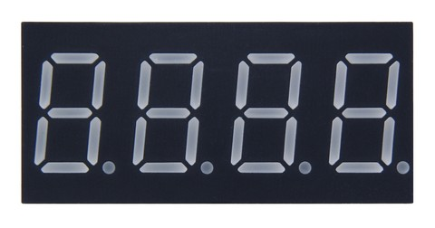

6. 7 segment display¶
Goals¶
- Write a number on the 7-segment display.
- Write alphanumeric characters on the 7-segment display.
7 segment display¶
The display or display of seven segments is an element that allows to show numbers and also symbols and characters in a limited way. This type of display is used where good visibility is desired and has the advantage of being robust and easy to handle. 7-segment displays can be found in audio players, microwave ovens, cars, watches, etc.
In this type of display, you only have to define the state of seven elements to form the desired number. In other types of more complex displays, it is necessary to define the state of 35 or more points to form a number or character. The disadvantage of the 7-segment display is based on its poor ability to represent letters and symbols.
In the attached figure you can see a 7-segment display and the nomenclature of its elements.
{kind=link}

The dispWrite function¶
-
dispWrite()¶ This function allows you to write numbers and characters on the 7-segment, 4-digit display. Depending on the number of arguments and their type, it will behave differently.
-
dispWrite(int number)¶ When the argument of the
dispWritefunction is a natural number (0, 1, 2, ...) this number will be displayed with four digits on the display. If the number has less than four digits, the display turns off the unused digits on the left. If the number is greater than 9999, only the last four digits are represented.Here are some display examples.
dispWrite(0); -> [ 0 ] dispWrite(1); -> [ 1 ] dispWrite(20); -> [ 2 0 ] dispWrite(124); -> [ 1 2 4 ] dispWrite(2345); -> [ 2 3 4 5 ] dispWrite(10321); -> [ 0 3 2 1 ]
The example below represents a number on the display that increases and decreases with buttons 3 and 4.
1 2 3 4 5 6 7 8 9 10 11 12 13 14 15 16 17 18 19 20 21 22 23 24 25 26 27 28 29 | // Aumenta y disminuye un número en el display
// con los pulsadores 3 y 4
#include <Picuino.h>
unsigned int number;
void setup() {
pio.begin(); // Inicializa el shield Picuino UNO
number = 100; // Valor visualizado al comienzo
}
void loop() {
// Muestra el número en el display de 7 segmentos
pio.dispWrite(number);
// Espera 10 milisegundos
delay(10);
// Si ha aumentado el contador del pulsador 3
if (pio.keyCount(3) > 0)
// Aumenta el número del display
number = number * 1.05 + 1;
// Si ha aumentado el contador del pulsador 4
if (pio.keyCount(4) > 0)
// Disminuye el número del display
number = number * 0.95;
}
|
dispWrite(int position, int segments)
When the arguments to the
dispWritefunction are two numbers, the first represents the position of the digit to be changed and the second represents the segments to be turned on. The digit positions are, from left to right, 1 2 3 4.The one-digit segments are turned on or off with a binary number representing each one. The first (leftmost) binary digit represents segment 'a'. The second binary digit represents segment 'b' and so on up to the eighth binary digit which does not represent any segment.
For example, the binary number 0b10000000 will turn on segment 'a' and will be seen on the 7 segment display as a top bar '¯'. The binary number 0b01100000 will turn on the 'b' and 'c' segments and will be seen on the 7-segment display as the number 1. The binary number 0b00000010 will turn on the 'g' segment and will be seen on the 7-segment display as the sign less '-'.
Sometimes it will be easier to use the values already predefined in the library. Below is a list with the standard predefined values.
- Numbers: SS_0, SS_1, SS_2, SS_3, SS_4, SS_5, SS_6, SS_7, SS_8, SS_9
- Letters: SS_A, SS_b, SS_B, SS_C, SS_d, SS_E, SS_F, SS_G, SS_g, SS_H, SS_h, SS_I, SS_i, SS_J, SS_K, SS_L, SS_n, SS_ny, SS_o, SS_O, SS_P, SS_q, SS_r, SS_S, SS_t, SS_u, SS_U, SS_y, SS_Y, SS_Z
- White Space: SS_SP
Custom symbols can also be created.
The following program rotates a bar through the top four segments of a digit.
1 2 3 4 5 6 7 8 9 10 11 12 13 14 15 16 17 18 19 20 21 22 23 24 25 | // Gira un segmento alrededor de los cuatro ledes superiores de un dígito
#include <Picuino.h>
void setup() {
pio.begin(); // Inicializa el shield Picuino UNO
}
void loop() {
// Enciende el segmento 'a' y espera 0,1 segundos
pio.dispWrite(1, 0b10000000);
delay(100);
// Enciende el segmento 'b' y espera 0,1 segundos
pio.dispWrite(1, 0b01000000);
delay(100);
// Enciende el segmento 'g' y espera 0,1 segundos
pio.dispWrite(1, 0b00000010);
delay(100);
// Enciende el segmento 'f' y espera 0,1 segundos
pio.dispWrite(1, 0b00000100);
delay(100);
}
|
The following program rotates a bar through all the outer segments of a digit.
1 2 3 4 5 6 7 8 9 10 11 12 13 14 15 16 17 18 19 20 21 22 23 24 25 26 | // Gira un segmento alrededor del primer
// dígito del display de 7 segmentos
#include <Picuino.h>
int segment;
void setup() {
pio.begin(); // Inicializa el shield Picuino UNO
segment = 0b10000000; // El primer segmento encendido es el 'a'
}
void loop() {
// Enciende el segmento seleccionado y espera 0,1 segundos
pio.dispWrite(1, segment);
delay(100);
// Desplaza el segmento hacia la derecha
segment = (segment >> 1);
// Si se ha llegado al segmento 'f'
if (segment == 0b00000010)
// Enciende el segmento 'a'
segment = 0b10000000:
}
|
dispWrite(int digit, int digit, int digit, int digit)
When thedispWritefunction has four arguments, each one is interpreted as the value of each digit of the seven-segment display. This form is more comfortable to visualize a word. The following example makes the word 'HELLO' appear on the display.
1 2 3 4 5 6 7 8 9 10 11 12 13 14 15 16 | // Muestra la palabra 'HOLA' en el display
#include <Picuino.h>
void setup() {
// Inicializa el shield Picuino UNO
pio.begin();
// Muestra la palabra 'HOLA'
pio.dispWrite(SS_H, SS_O, SS_L, SS_A);
}
void loop() {
}
|
Exercises¶
Program the code needed to solve the following problems.
Complete the following program so that it counts backwards from 10 to 0, changing its value once every second. Once the countdown is over, the red led should light up.
1 2 3 4 5 6 7 8 9 10 11 12 13 14 15 16 17 18 19 20
// Cuenta atrás de 10 segundos #include <Picuino.h> int count; void setup() { pio.begin(); // Inicializa el shield Picuino UNO count = 10; while(count > 0) { // Muestra el número en el display // Espera un segundo // Reduce la variable count en una unidad } // Muestra el número en el display // Enciende el led rojo } void loop() { }
Complete the following program to make it work as an electronic dice. When pressing button 1, a number from 1 to 6 should be shown on the display.
1 2 3 4 5 6 7 8 9 10 11 12 13 14 15 16 17
// Dado electrónico #include <Picuino.h> int value; void setup() { pio.begin(); // Inicializa el shield Picuino UNO } void loop() { // Calcula un número aleatorio entre 1 y 6 value = random(1, 1 + 6); // Muestra el valor por el display // Espera 50 milisegundos // Espera mientras no se pulse la tecla 1 }
Show in the fourth digit an animation that consists of lighting all the segments one by one from segment 'a' to segment 'f'. When all segments are lit, they should all go out again and the sequence will start over. The waiting time between the lighting of one segment and the next will be half a second.
Design two new symbols and write a program that shows them on the display in positions 2 and 4.
Draw some weights on the display.
It shows the words 'HELLO' and a short proper name on the display. The two words must alternate every half second.
Make an original animation on the display, showing symbols or light movements.